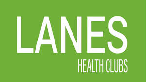

Trade Mark Journal No.2025/029 18 July 2025
UK00004193871 24 April 2025 (3,30,41,43,44)

- Class 3
- Beauty serums; Beauty creams; Beauty lotions; Beauty care cosmetics; Beauty masks; Masks (Beauty -); Beauty soap; Beauty milk; Beauty gels; Beauty milks; Beauty creams for body care; Facial beauty masks; Beauty balm creams; Beauty preparations for the hair; Beauty care preparations; Distilled oils for beauty care; Beauty tonics for application to the face; Beauty masks for hands; Beauty tonics for application to the body; Beauty serums with anti-ageing properties; Natural cosmetics; Body cleaning and beauty care preparations; Non-medicated beauty preparations; Natural makeup; Skincare cosmetics; Natural perfumery; Body care cosmetics; Body and facial creams [cosmetics]; Hair cosmetics; Cosmetics; Skin care cosmetics; Colour cosmetics; Facial creams [cosmetics]; Colour cosmetics for the skin; Hair care creams [for cosmetic use]; Anti-aging moisturizers used as cosmetics; Colour cosmetics for the eyes; Cosmetic products in the form of aerosols for skincare; Body creams [cosmetics]; Cosmetics for eye-lashes; Natural oils for cosmetic purposes; Hair care lotions [for cosmetic use]; Cosmetics for suntanning; Facial makeup; Organic cosmetics; Cosmetic products in the form of aerosols for skin care; Eye cosmetics; Skin masks [cosmetics].
- Class 30
- Coffee; Coffee drinks; Cappuccino; Coffee based drinks; Iced coffee; Chocolate coffee; Coffee beverages; Beverages with coffee base; Beverages with a coffee base; Flavoured coffee; Coffee pods; Instant coffee; Coffee substitutes [artificial coffee or vegetable preparations for use as coffee]; Decaffeinated coffee; Danish pastries; Bakery goods; Ground coffee; Coffee flavourings.
- Class 41
- Gym activity classes; Exercise and fitness classes; Sports and fitness; Gymnasium club services; Providing obstacle course training gym facilities; Exercise [fitness] training services; Fitness and exercise training services; Fitness club services; Fitness and exercise instruction; Training in yoga; Providing fitness and exercise facilities; Aerobic and dance facilities; Health and fitness training; Exercise classes; Personal trainer services [fitness training]; Training of swimming teachers; Tuition in physical fitness; Physical fitness tuition; Conducting physical fitness conditioning classes; Aerobics training services; Gymnasiums; Aerobics competitions; Rental of sports or exercise equipment; Golf fitness instruction; Sports and fitness services; Fitness training services; Health and fitness club services; Health club [fitness] services; Physical fitness training services; Conducting fitness classes; Health club services [exercise]; Physical fitness centres; Health club services [health and fitness training]; Gymnasium services; Physical fitness consultation; Sports training; Training in sports; Provision of health club [physical exercise] facilities; Swimming facilities; Beach and pool clubs; Physical fitness instruction; Swimming bath facilities; Rental of treadmills; Exercise [fitness] advisory services; Gymnasium services relating to weight training; Training of sports teachers; Conducting training sessions on physical fitness online; Personal fitness training services; Physical fitness centre services; Pilates instruction; Providing health club and gymnasium services; Booking of exercise facilities; Personal coaching [training]; Personal training services; Personal development training; Personal trainer services; Provision of training courses in personal development; Training; Personal development courses; Personal coaching services in the field of ballet; Life coaching (training); Physical fitness assessment services for training purposes; Training and further training consultancy; Consultancy relating to physical fitness training; Practical training; Education and training; Teaching of swimming; Swimming instruction.
- Class 43
- Cafe services; Café services; Cafés; Coffee shop services; Bar and restaurant services; Restaurant and bar services; Take-away restaurant services; Salad bars [restaurant services]; Restaurant services; Snack bar services; Catering (Food and drink -); Providing food and drink for guests in restaurants.
- Class 44
- Beauty salons; Salons (Beauty -); Beauty care; Beauty treatment; Beauty salon services; Salon services (Beauty -); Beauty consultation; Beauty spa services; Beauty counselling; Beauty consultancy; Hygienic and beauty care; Beauty care for animals; Services of a hair and beauty salon; Beauty care of feet; Human hygiene and beauty care; Pet beauty salon services; Beauty care services; Beauty therapy services; Hygienic and beauty care for animals; Beauty treatment services; Facial beauty treatment services; Hygienic and beauty care for humans; Hygienic and beauty care services; Beauty salons for wig cutting; Beauty therapy treatments; Beauty care for human beings; Beauty treatment services especially for eyelashes; Hygienic and beauty care for human beings; Beauty consultation services; Beauty information services; Consultancy in the field of body and beauty care; Beauty advisory services; Beauty consultancy services; Rental of equipment for human hygiene and beauty care; Beauty care services provided by a health spa; Provision of hygienic and beauty care services; Information relating to beauty care; Information relating to beauty; Advisory services relating to beauty care; Consultation services relating to beauty care; Advisory services relating to beauty; Consultancy services relating to beauty; Providing information relating to beauty salon services; Advisory services relating to beauty treatment; Providing information about beauty; Consultancy provided via the Internet in the field of body and beauty care; Rental of machines and apparatus for use in beauty salons or barbers' shops; Cosmetic make-up services; Skin care salons; Hair salon services for women; Skin care salon services; Cosmetic treatment services for the body, face and hair; Physiotherapy; Physiotherapy [physical therapy]; Physiotherapy services; Electro therapy services for physiotherapy; Podiatrist; Chiropody; Therapeutical pilates; Chiropractics; Medical counselling; Cupping therapy services; Cupping therapy; Occupational therapy and rehabilitation; Hydrotherapy; Acupressure therapy; Massage and therapeutic shiatsu massage; Bodywork therapy; Ayurveda therapy; Medical counselling services; Sports massage; Foot massage services; Massage; Counselling relating to occupational therapy; Osteopathy; Autogenic therapy services; Medical services in the field of treatment of chronic pain; Medical clinic services; Clinic (Medical -) services; Clinic services (Medical -); Hydrotherapy services; Reflexology; Chiropractic; Dietetic counselling services [medical]; Counselling relating to the psychological treatment of medical ailments; Massages; Health counselling; Nutrition counselling; Equine massage; Medical spa services; Physical therapy services; Physical therapy; Heat therapy [medical]; Therapy (Physical -).
Chris Lanes Leisure Holdings LTD